Prompt 开发 · 版本 · Playground
本地 localhost:8082 实录 · 开源可用
上级：Loop 实战总目录
界面实录
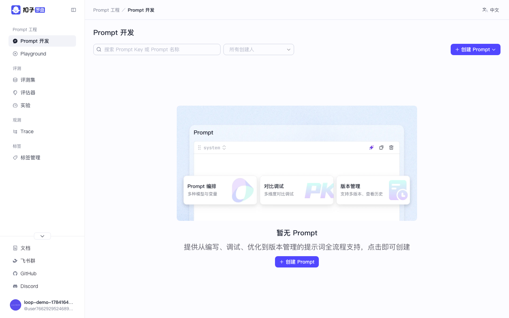
图：Prompt 列表空态
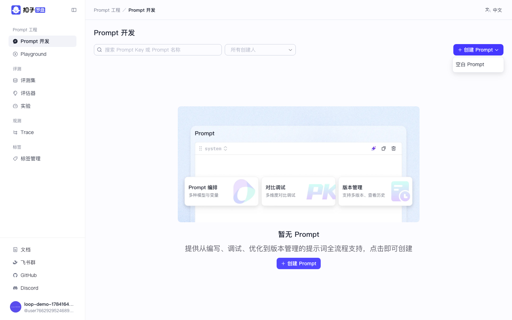
图：创建 Prompt → 空白 Prompt
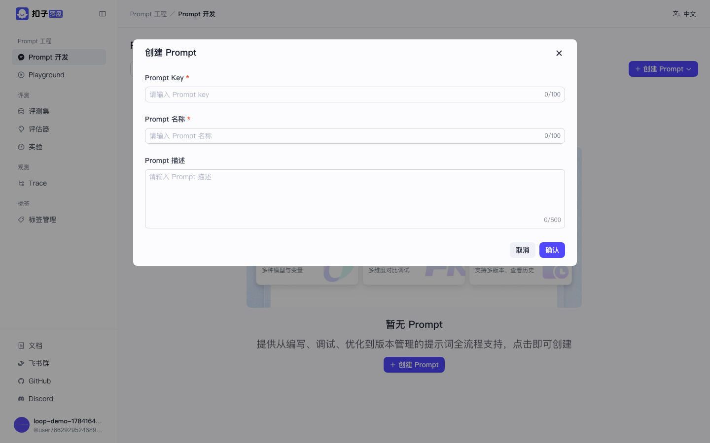
图：创建弹窗：Key / 名称 / 描述
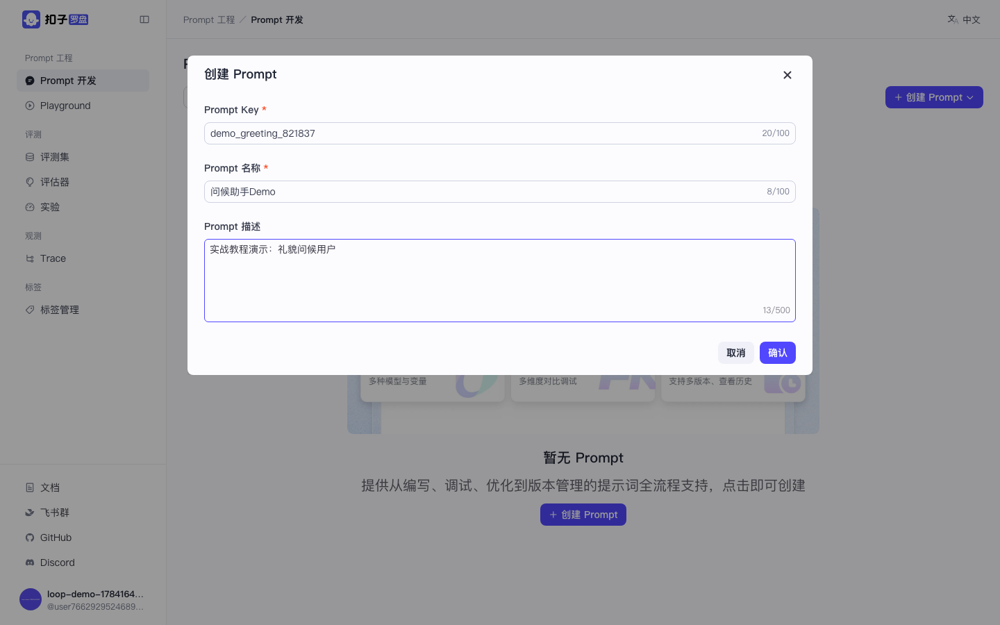
图：填写合法 Prompt Key（字母开头）
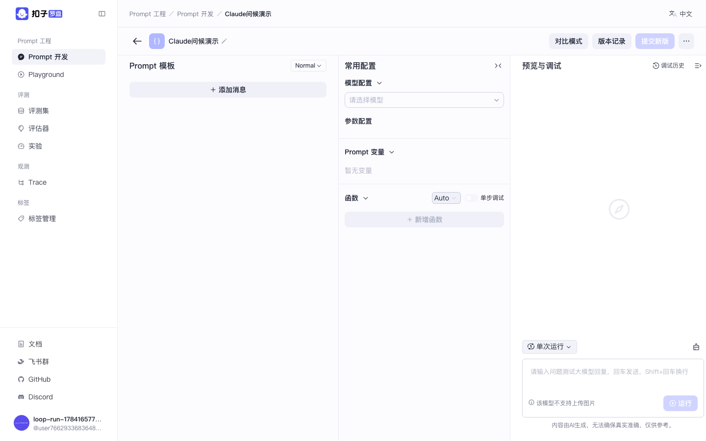
图：进入 Prompt 编排调试页
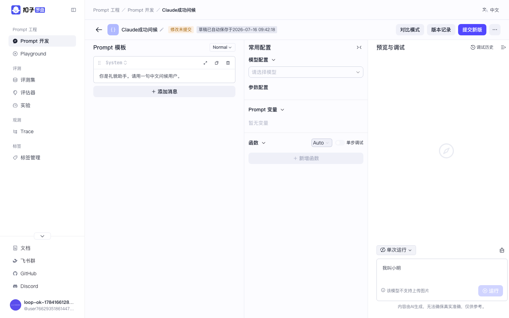
图：填写 System / User 消息模板
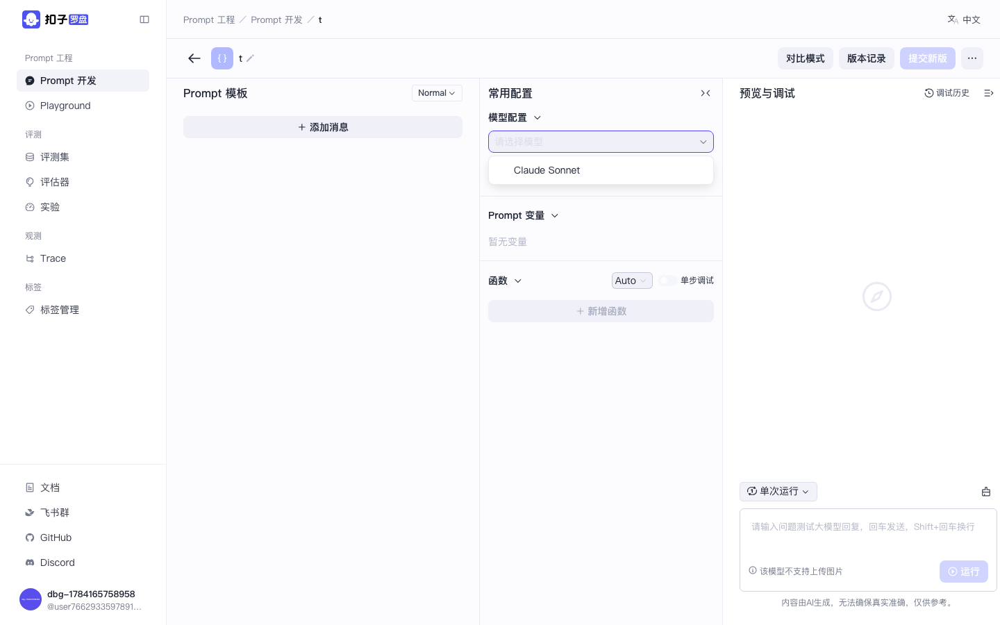
图：模型下拉出现 Claude Sonnet
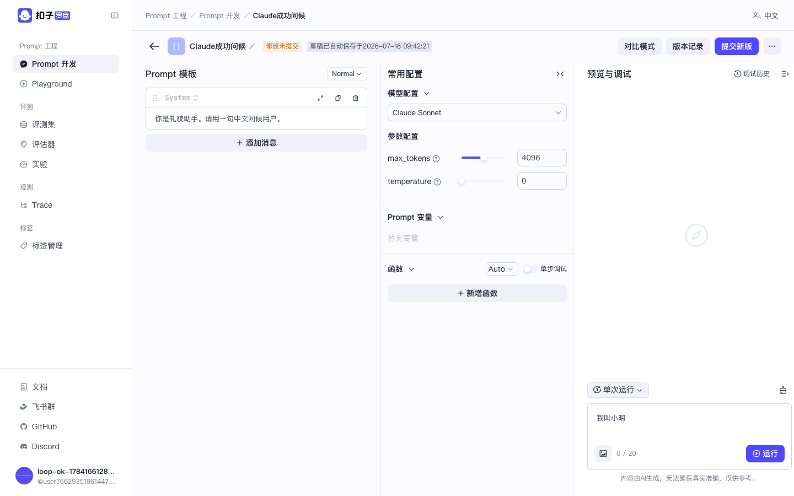
图：已选择 Claude Sonnet，参数仅 temperature + max_tokens
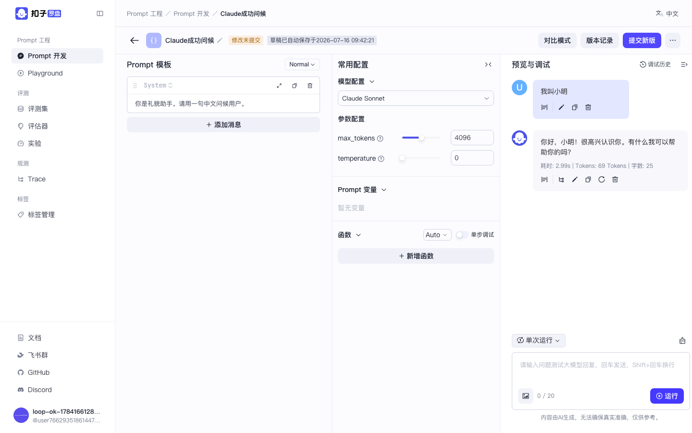
图：调试成功：Claude 回复「你好，小明！」约 3s / 69 Tokens
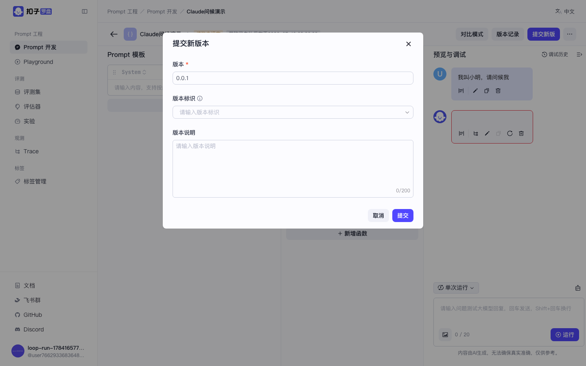
图：提交新版
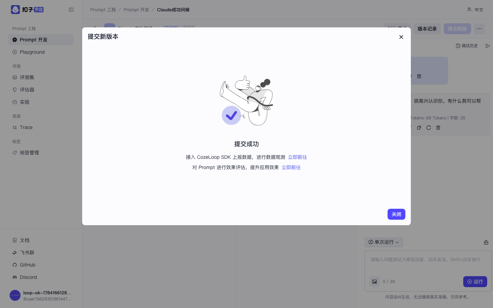
图：版本提交完成
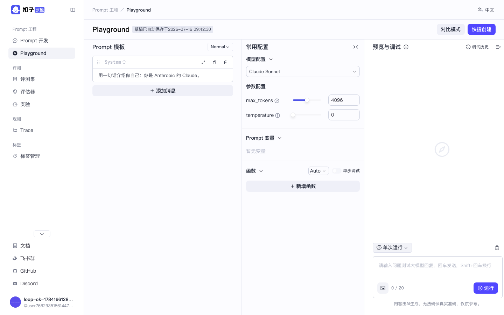
图：Playground 选中 Claude
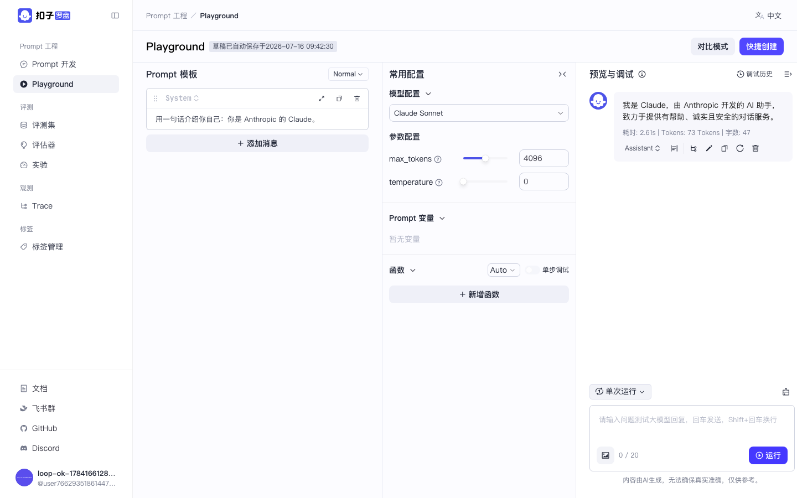
图：Playground 运行成功：自我介绍为 Claude（2.6s）
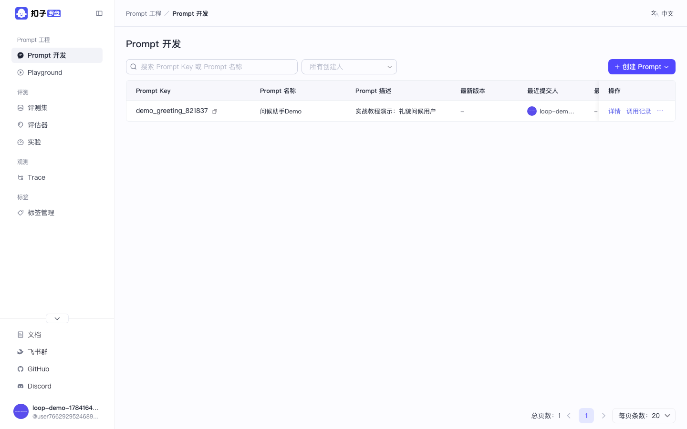
图：列表中出现刚创建的 Prompt
操作步骤
打开 Prompt 开发
侧栏 → Prompt 开发，路径形如 .../pe/prompts。
创建空白 Prompt
点右上角 创建 Prompt → 菜单选 空白 Prompt。填写 Prompt Key（须匹配 ^[a-zA-Z][a-zA-Z0-9_.]*$）、名称、描述，点确认。
编排与调试（Claude 实录）
在 System / User 消息框填写内容（可 {{变量}}）。中间栏模型配置选 Claude Sonnet。右侧点运行，约数秒应返回模型回复，并显示耗时与 Token。本实录回复示例：「你好，小明！很高兴认识你…」。
提交版本
调试满意后点提交新版，填写版本号（如 0.0.1），留下可回滚记录；列表「调用记录」可跳到 Trace。
Playground
侧栏 → Playground：不落库的快速试验。同样选 Claude 后运行，可验证「我是 Claude，由 Anthropic 开发…」一类回复，满意后再快捷创建成正式 Prompt。
temperature and top_p cannot both be specified：从 model_config 的 param_schemas 去掉 top_p，只留 temperature（或反过来），再 restart app。